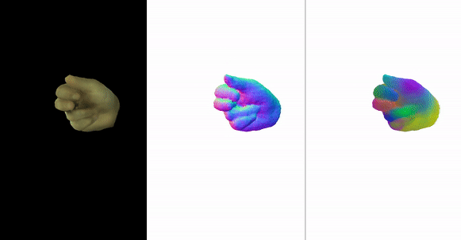
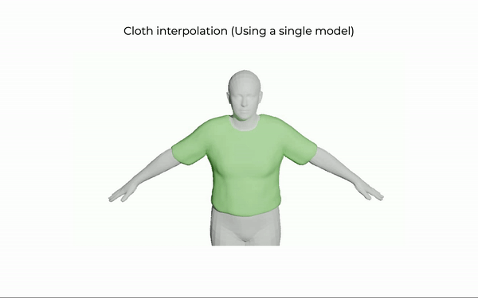

About me
I am a Research Scientist at Google DeepMind, working on Digital Humans and Generative AI. Previously, I completed my PhD at IRI-UPC under the supervision of Francesc Moreno-Noguer and Guillem Alenyà. During my PhD, I interned at Google Research with Thiemo Alldieck and Mihai Zanfir in 2022 and at Meta with Lingni Ma in 2021. I have also been a visitor at Naver Labs Europe with Grégory Rogez. Before starting my PhD, I visited Sanja Fidler at University of Toronto in 2017 and worked as a data scientist in IntelliSense.io.
My research is in areas of computer vision and machine learning, including modelling and reconstruction of 3D human bodies and hands.
Publications

VLOGGER: Multimodal Diffusion for Embodied Avatar Synthesis
Enric Corona, Andrei Zanfir, Eduard Gabriel Bazavan, Nikos Kolotouros, Thiemo Alldieck and Cristian Sminchisescuin arXiv
Project Page
Paper
Supplementary
Video
Dataset
Bibtex
@inproceedings{corona2024vlogger,
Author = {Corona, Enric and Zanfir, Andrei and Gabriel Bazavan, Eduard and Kolotouros, Nikos and Alldieck, Thiemo and Sminchisescu, Cristian}
Title = {VLOGGER: Multimodal Diffusion for Embodied Avatar Synthesis},
Year = {2024},
booktitle = {arXiv},
}

DiffHuman: Probabilistic Photorealistic 3D Reconstruction of Humans
Akash Sengupta, Thiemo Alldieck, Nikos Kolotouros, Enric Corona, Andrei Zanfir and Cristian Sminchisescu
in IEEE Conference on Computer Vision and Pattern Recognition (CVPR), 2024
Project Page Paper Video Bibtex
@inproceedings{
sengupta2024diffhuman,
author = {Sengupta, Akash and Alldieck, Thiemo and Kolotouros, Nikos and Corona, Enric and Zanfir, Andrei and Sminchisescu, Cristian},
title = {{DiffHuman: Probabilistic Photorealistic 3D Reconstruction of Humans}},
booktitle = {CVPR},
month = {June},
year = {2024}
}

Structured 3D Features for Reconstructing Relightable and Animatable Avatars
Enric Corona, Mihai Zanfir, Thiemo Alldieck, Eduard Gabriel Bazavan, Andrei Zanfir and Cristian Sminchisescu
in IEEE Conference on Computer Vision and Pattern Recognition (CVPR), 2023
Project Page Paper Supplementary Video Bibtex
@inproceedings{corona2023s3f,
Author = {Corona, Enric and Zanfir, Mihai and Alldieck, Thiemo and Gabriel Bazavan, Eduard and Zanfir, Andrei and Sminchisescu, Cristian}
Title = {Structured 3D Features for Reconstructing Relightable and Animatable Avatars},
Year = {2023},
booktitle = {CVPR},
}
Learned Vertex Descent: A New Direction for 3D Human Model Fitting
Enric Corona, Gerard Pons-Moll, Guillem Alenyà, Francesc Moreno-Noguer
in Proceedings of the European Conference on Computer Vision (ECCV), 2022
Project Page Paper Video Code Bibtex
@inproceedings{corona2022lvd,
Author = {Corona, Enric and Pons-Moll, Gerard and Alenyà, Guillem and Moreno-Noguer, Francesc}
Title = {Learned Vertex Descent: A New Direction for 3D Human Model Fitting},
Year = {2022},
booktitle = {ECCV},
}

LISA: Learning Implicit Shape and Appearance of Hands
Enric Corona, Tomas Hodan, Minh Vo, Francesc Moreno-Noguer, Chris Sweeney, Richard Newcombe, Lingni Ma
in IEEE Conference on Computer Vision and Pattern Recognition (CVPR), 2022
Project Page Paper Supplementary Bibtex
@inproceedings{corona2022lisa,
Author = {Corona, Enric and Hodan, Tomas and Vo, Minh and Moreno-Noguer, Francesc and Sweeney, Chris and Newcombe, Richard and Ma, Lingni}
Title = {LISA: Learning Implicit Shape and Appearance of Hands},
Year = {2022},
booktitle = {CVPR},
}

SMPLicit: Topology-aware Generative Model for Clothed People
E. Corona, A. Pumarola, G. Alenyà, G. Pons-Moll, F. Moreno-Noguer
in IEEE Conference on Computer Vision and Pattern Recognition (CVPR), 2021
Project Page Paper SMPLicit code Fitting SMPLicit Bibtex
@inproceedings{corona2021smplicit,
Author = {Enric Corona and Albert Pumarola and Guillem Aleny{\`a} and Pons-Moll, Gerard and Moreno-Noguer, Francesc},
Title = {SMPLicit: Topology-aware Generative Model for Clothed People},
Year = {2021},
booktitle = {CVPR},
}

D-NeRF: Neural Radiance Fields for Dynamic Scenes
A.Pumarola, E. Corona, G. Pons-Moll, F. Moreno-Noguer
in IEEE Conference on Computer Vision and Pattern Recognition (CVPR), 2021
Project Page Paper Code Bibtex
@article{pumarola2020d,
title={{D-NeRF: Neural Radiance Fields for Dynamic Scenes}},
author={Pumarola, Albert and Corona, Enric and Pons-Moll, Gerard and Moreno-Noguer, Francesc},
journal={arXiv preprint arXiv:2011.13961},
year={2020}
}

GanHand: Predicting Human Grasp Affordances in Multi-Object Scenes
E. Corona, A. Pumarola, G. Alenyà, F. Moreno-Noguer; G. Rogez
in IEEE Conference on Computer Vision and Pattern Recognition (CVPR), 2020 (Oral)
Project Page Paper Dataset Code Bibtex
@inproceedings{corona2020ganhand,
Author = {Enric Corona and Albert Pumarola and Guillem Aleny{\`a} and Moreno-Noguer, Francesc and Rogez, Gr{\'e}gory},
Title = {GanHand: Predicting Human Grasp Affordances in Multi-Object Scenes},
Year = {2020},
booktitle = {CVPR},
}

Context-aware Human Motion Prediction
E. Corona, A. Pumarola, G. Alenyà, F. Moreno-Noguer
in IEEE Conference on Computer Vision and Pattern Recognition (CVPR), 2020
Project Page Paper Code Bibtex
@inproceedings{corona2020context,
Author = {Corona, Enric and Pumarola, Albert and Aleny{\`a}, Guillem and Moreno-Noguer, Francesc},
Title = {Context-aware Human Motion Prediction},
Year = {2020},
booktitle = {CVPR},
}

Pose Estimation for Objects with Rotational Symmetry
E. Corona, K. Kundu, S. Fidler
in IEEE International Conference on Intelligent Robots (IROS), 2018
Project Page Paper Code Bibtex
@inproceedings{corona2018pose,
title={Pose Estimation for Objects with Rotational Symmetry},
author={Corona, Enric and Kundu, Kaustav and Fidler, Sanja},
booktitle={2018 IEEE/RSJ International Conference on Intelligent Robots and Systems (IROS)},
pages={7215--7222},
year={2018},
organization={IEEE}
}
Active garment recognition and target grasping pointdetection using deep learning
E. Corona, G. Alenyà, A. Gabàs, C. Torras
in Pattern Recognition (2018)
Project Page Paper Code Bibtex
@article{corona2018active,
title={Active garment recognition and target grasping point detection using deep learning},
author={Corona, Enric and Alenya, Guillem and Gabas, Antonio and Torras, Carme},
journal={Pattern Recognition},
volume={74},
pages={629--641},
year={2018},
publisher={Elsevier}
}
Robot-aided cloth classification using depth informationand CNNs
A. Gabàs, E.Corona, G. Alenyà, C. Torras
in International Conference on Articulated Motion and Deformable Objects (AMDO) 2016
Project Page Paper Bibtex
@inproceedings{gabas2016robot,
title={Robot-aided cloth classification using depth information and CNNs},
author={Gabas, Antonio and Corona, Enric and Aleny{\`a}, Guillem and Torras, Carme},
booktitle={International Conference on Articulated Motion and Deformable Objects},
pages={16--23},
year={2016},
organization={Springer}
}
Past Professional Activities
- July 2022: Intern at Google Research for 5 months, working with Thiemo Alldieck and Mihai Zanfir.
- June 2021: Intern at Reality Labs, Meta for 5 months, working with Lingni Ma.
- July 2019: Visiting Naver Labs Europe for 5 months, working with Grégory Rogez.
- January 2019: Starting PhD with Francesc Moreno-Noguer and Guillem Alenyà.
- April 2017: Visiting at University of Toronto for 9 months, working with Sanja Fidler.